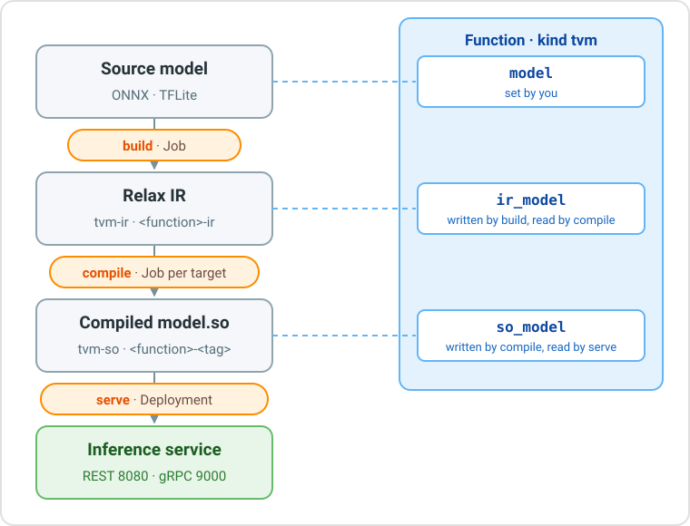

TVM Runtime
The TVM runtime turns a trained model into fast native code with Apache TVM and serves it through the Open Inference v2 protocol, over REST and gRPC.
It takes a model in ONNX or TFLite format, compiles it for a CPU (x86 servers, 64-bit or 32-bit ARM devices such as a Raspberry Pi) and deploys it as a service, without writing code or building container images.

The runtime has three actions, run one after the other:
| Action | What it does | Runs as | Result |
|---|---|---|---|
build |
Converts the source model into Relax IR, the intermediate representation of TVM | Kubernetes Job | Model <function>-ir, kind tvm-ir |
compile |
Compiles the Relax IR into a native library, model.so, for a target architecture |
Kubernetes Job | Model <function>-<tag>, kind tvm-so |
serve |
Deploys the compiled model as an Open Inference v2 service | Kubernetes Deployment and Service | Inference service |
How it works
- The function links the steps. When
buildcompletes, the platform writes the key of the new IR Model into the function fieldir_model; whencompilecompletes, it writes the key of the compiled Model intoso_model. The next action reads that field, so no key has to be copied by hand. - One build, many targets. The Relax IR does not depend on the hardware: the same IR can be compiled once for each target architecture.
- Everything is a Model. The IR and the compiled library are stored as Models of kind
tvm-irandtvm-so, with their input and output signature, so they can be inspected, versioned and reused. - No image per model. The
serveaction starts a generic serve image and downloads the compiled Model into it. Two serve images are available, in Go (default) and in Rust. - The right node for each model. A model compiled for ARM is served only on the ARM nodes of the cluster, and an x86 model only on the x86 nodes: see Where the service runs.
From a model to a prediction
| Step | What to do | Details |
|---|---|---|
| 1. Upload the model | Create a Model of kind onnx or tflite and upload the file |
Source Models |
| 2. Create the function | Create a function of kind tvm that points to the Model |
Function |
| 3. Build | Run the build action |
Build action |
| 4. Compile | Run the compile action for your target |
Compile action, examples |
| 5. Serve | Run the serve action |
Serve action |
| 6. Test | Send a request to the service | Test the service |
The TVM tutorial walks through all the steps with a YOLOv8 model, from the console and from the CLI.
Source Models
Upload the model as a Model of kind onnx or tflite. The fields only describe the model and are all optional: the build action reads the real signature from the file.
| Kind | Fields |
|---|---|
onnx |
inputs, outputs, parameters, opset (the operator set version used at export) |
tflite |
inputs, outputs, parameters |
Each tensor in inputs and outputs has name, dtype and shape; quantized tensors also have scale, zero_point and quantized_dimension.
A Model of the generic kind model also works, for example one uploaded with dhcli upload: its format is then taken from the file extension.
Function
A function of kind tvm describes the model to compile and serve.
| Field | Required | What to enter |
|---|---|---|
model |
yes | The key of the source Model (store://<project>/model/<kind>/<name>:<id>, or without :<id> for the latest version), or an s3:// or https:// path. |
format |
no | auto (default), onnx or tflite. auto uses the kind of the Model, otherwise the file extension. |
ir_model |
no | Leave it empty: build fills it. |
so_model |
no | Leave it empty: compile fills it. |
kind: tvm
name: yolo-function
spec:
model: store://my-project/model/onnx/yolo
format: auto
When to set the format
auto works with a Model of kind onnx or tflite, and with any path ending with .onnx or .tflite. If a generic Model points to a folder or to a file without extension, set format to onnx or tflite.
Build action
The build action runs a Job that converts the source model into Relax IR and saves it as the Model <function>-ir, of kind tvm-ir.
- Load the ONNX model.
- Optionally convert it to another operator set version (
target_opset). - Optionally simplify the graph with onnxsim (
simplify). - Run the ONNX shape inference.
- Convert the graph into Relax IR, with
float32as default data type. - Save the IR with its
metadata.jsonand publish the Model.
- Load the TFLite model.
- Convert it into Relax IR. Full-integer quantized models are supported; dynamic-range quantized models are not.
- Save the IR with its
metadata.jsonand publish the Model.
Build options
All fields are optional: for most models the defaults are enough. The conversion options apply to ONNX models only.
| Field | Default | What it does |
|---|---|---|
simplify |
false |
Simplifies the graph with onnxsim before converting it. |
target_opset |
empty | Converts the model to this ONNX operator set version first. Leave it empty unless the model needs it: the conversion fails when ONNX has no converter for an operator. |
opset_override |
model opset | Operator set version the TVM importer assumes, instead of the one declared by the model. |
strict_shape_inference |
false |
Runs the ONNX shape inference in strict mode. |
data_prop |
false |
Propagates constant values during shape inference, to resolve more shapes. |
keep_params_in_input |
false |
Keeps the weights in a separate params.bin; compile embeds them again. |
sanitize_input_names |
true |
Rewrites the input names into valid identifiers. |
image |
toolkit image | Another image for this run. |
Build output
| File | Content |
|---|---|
model.relax.json |
The Relax IR, read by compile. |
model.relax.ir |
A readable dump of the IR, for debugging. |
metadata.json |
Input and output tensors, source format and conversion settings. |
params.bin |
The weights, only with keep_params_in_input: true. |
Compile action
The compile action runs a Job that compiles the Relax IR into model.so for a target architecture and saves it as the Model <function>-<tag> (<function>-so by default), of kind tvm-so, linked to the IR Model it comes from.
Target architectures
target_architecture |
Where the model runs | Typical devices |
|---|---|---|
cpu (default) |
The architecture of the cluster node that runs the Job, with generic code | Nodes of the cluster |
x86 |
Any x86-64 CPU with SSE4.2 (x86-64-v2, about 2009 and newer) | Servers, PCs, x86 cluster nodes |
x86_v3 |
x86-64 CPUs with AVX2 (Intel Haswell, AMD Excavator and newer) | Recent servers and PCs |
x86_native |
Exactly the CPU model of the node that runs the Job | Nodes identical to the compile node |
arm64 |
64-bit ARM (aarch64) | Raspberry Pi 3, 4, 5 with a 64-bit OS, NVIDIA Jetson, ARM servers |
arm64_pi5 |
Raspberry Pi 5 (Cortex-A76, 4 cores) | Raspberry Pi 5 with a 64-bit OS |
armv7l |
32-bit ARM with hardware floating point and NEON (armhf) | Raspberry Pi 2, 3, 4 with a 32-bit OS |
The more specific the target, the faster the code, but it only runs on that kind of CPU.
- The ARM targets are cross-compiled: the Job runs on any node of the cluster and links the library with the ARM compiler included in the toolkit image.
- The x86 targets are compiled on an x86 (
amd64) node, which the platform selects by itself.
Compile options
All fields are optional.
| Field | Default | What it does |
|---|---|---|
target_architecture |
cpu |
Target architecture, from the table above. |
target_num_cores |
resources.cpu |
Number of cores the generated code is optimized for. Serve with the same number of threads. |
tag |
so |
Suffix of the compiled Model name, <function>-<tag>. Use one tag per target, for example x86 or arm64. |
opt_level |
3 |
TVM optimization level, from 0 to 3. |
exec_mode |
bytecode |
How the model graph runs: bytecode (interpreted by the Relax virtual machine) or compiled (native code). |
model_path |
function ir_model |
Key of another IR Model to compile. |
cross_cc |
set by target | C++ cross compiler. Filled in automatically for the ARM targets (aarch64-linux-gnu-g++, arm-linux-gnueabihf-g++): set it only to use another compiler. |
benchmark_runs |
10 |
Timed inferences of the finished model.so, saved in metadata.json. 0 turns it off. Skipped for cross-compiled targets. |
relax_pipeline |
default |
Name of the Relax optimization pipeline. |
tir_pipeline |
default |
Name of the TIR optimization pipeline. |
system_lib |
false |
Advanced: builds a system-library module, which the serve images cannot load. |
params_path |
params.bin of the IR |
Path, inside the Job, of the weights file to embed. |
image |
toolkit image | Another image for this run. |
The tuning options are described in Making models fast.
Compile examples
In the console, open the function, select the compile tab and click CREATE: enter these values in the fields with the same name. With the CLI, save the YAML in a file and run dhcli run tvm+compile -p <project> -n <function> -f <file>.
Runs on any x86-64 server of the cluster, and on x86 PCs.
| Field | Value |
|---|---|
target_architecture |
x86 |
tag |
x86 |
opt_level |
3 |
resources |
CPU 4, memory 8Gi |
spec:
target_architecture: x86
tag: x86
opt_level: 3
resources:
cpu: "4"
mem: 8Gi
Result: the Model <function>-x86, which the serve action deploys on the x86 nodes of the cluster.
For a Raspberry Pi 3, 4 or 5 with a 64-bit OS (uname -m prints aarch64) and other 64-bit ARM devices.
| Field | Value |
|---|---|
target_architecture |
arm64 (or arm64_pi5 for a Raspberry Pi 5) |
tag |
arm64 |
cross_cc |
leave empty: aarch64-linux-gnu-g++ is used |
opt_level |
3 |
resources |
CPU 4, memory 8Gi |
spec:
target_architecture: arm64
tag: arm64
opt_level: 3
resources:
cpu: "4"
mem: 8Gi
Result: the Model <function>-arm64, whose model.so is an aarch64 library. Serve it on an ARM node of the cluster, or run it on the device as shown in Test the service.
For a Raspberry Pi 2, 3 or 4 with a 32-bit OS (uname -m prints armv7l).
| Field | Value |
|---|---|
target_architecture |
armv7l |
tag |
armv7l |
cross_cc |
leave empty: arm-linux-gnueabihf-g++ is used |
opt_level |
3 |
resources |
CPU 4, memory 8Gi |
spec:
target_architecture: armv7l
tag: armv7l
opt_level: 3
resources:
cpu: "4"
mem: 8Gi
Result: the Model <function>-armv7l, whose model.so is a 32-bit hard-float ARM library. Run it on the device as shown in Test the service.
To compile an older IR instead of the latest one written in ir_model.
| Field | Value |
|---|---|
model_path |
the IR Model key, e.g. store://my-project/model/tvm-ir/yolo-function-ir:<id> |
target_architecture |
x86 |
tag |
x86-v1 |
spec:
model_path: store://my-project/model/tvm-ir/yolo-function-ir:<id>
target_architecture: x86
tag: x86-v1
so_model points to the last compile
Every compile run writes its Model into the function field so_model, and serve deploys so_model by default. After compiling for ARM, so_model points to the ARM library, which the platform serves only on ARM nodes: to serve the x86 build, set the serve field model_path to its key (e.g. store://my-project/model/tvm-so/yolo-function-x86).
Compile output
| File | Content |
|---|---|
model.so |
The compiled model. |
metadata.json |
The IR metadata plus how the library was built: target, target_triple, tvm_version, tvm_git_commit, opt_level, exec_mode, relax_pipeline, tir_pipeline, tag, and the benchmark and meta_schedule sections when present. |
tuning/ |
The tuning database, only for tuned models. |
target_triple is the architecture of the code, such as x86_64-pc-linux-gnu or aarch64-linux-gnu: the platform reads it to choose the nodes of the service.
Making models fast
On CPU, an untuned model works, but it can be several times slower than ONNX Runtime: TVM has no ready-made optimized code for the operators. Tuning with MetaSchedule measures many variants of each operator on the real hardware and keeps the fastest ones. The result is saved in the tuning/ folder of the compiled Model and can be reused.
1. Tune once, on the same kind of CPU used for serving:
spec:
target_architecture: x86_native
target_num_cores: 4
tuning_mode: tune
tuning_trials: 8000
max_trials_per_task: 256
resources:
cpu: "4"
mem: 8Gi
2. Reuse the result to recompile the same IR for the same target, without measuring again:
spec:
target_architecture: x86_native
target_num_cores: 4
tuning_mode: apply
tuning_model_path: store://my-project/model/tvm-so/yolo-function-so:<id>
Tuning options
| Field | Default | What it does |
|---|---|---|
tuning_mode |
off |
off, tune (search the fastest code) or apply (reuse an earlier search). |
tuning_trials |
empty | Total number of variants to measure. Required with tune. |
max_trials_per_task |
16 |
Most variants a single task (operator) may use. |
tuning_trials_per_iter |
64 |
Variants measured for each task in one round. |
tuning_ops |
all | Tune only the tasks whose name contains one of these words, e.g. conv2d. |
tuning_model_path |
empty | An earlier compiled Model: tune continues its search, apply uses it. Required with apply. |
tuning_workers |
resources.cpu |
Variants compiled in parallel. |
tuning_seed |
0 |
Random seed, for repeatable searches. |
tuning_number |
3 |
Runs averaged in one measurement. |
tuning_repeat |
1 |
Measurements taken for each variant. |
tuning_min_repeat_ms |
100 |
Minimum length of one measurement, in milliseconds. |
tuning_alloc_repeat |
1 |
Input buffers rotated between measurements, to reduce cache effects. |
tuning_enable_cpu_cache_flush |
false |
Flushes the CPU caches before each measurement. |
tuning_builder_timeout_sec |
30 |
Time limit to compile one variant. |
tuning_runner_timeout_sec |
30 |
Time limit to run one variant. |
allow_partial_tuning |
false |
Accepts a budget or a database that does not cover every task. For quick tests only. |
Tuning on a device
A Job running on an x86 node cannot measure ARM code. To tune for an ARM device, register the device with a TVM RPC tracker and let the Job measure on it, or apply a database tuned on the device.
| Field | Default | What it does |
|---|---|---|
tuning_runner |
local |
local measures in the compile Job, rpc on a device registered with the tracker. |
rpc_tracker_host |
empty | Host of the TVM RPC tracker. Required with rpc. |
rpc_tracker_port |
empty | Port of the TVM RPC tracker. Required with rpc. |
rpc_tracker_key |
empty | Key the device is registered with. Required with rpc. |
rpc_session_timeout_sec |
60 |
Time limit of one RPC session. |
Settings that cannot work stop the run at once, in state ERROR with a message that explains why: for example tune without tuning_trials, apply without tuning_model_path, or local tuning of an ARM target.
Tips
- Budget. Give at least
tasks × min(64, max_trials_per_task)trials, so that every task is measured once. The compile log prints the number of tasks and this minimum; 64 to 256 trials per task is a good range. - Threads. Serve with the same number of threads per worker as
target_num_cores. - Compare. The
benchmarksection ofmetadata.jsonholds the timings of every compiled model.
Serve action
The serve action deploys the compiled Model. An init container downloads model.so and metadata.json into the pod; the serve image loads them and exposes the model on port 8080 (REST) and 9000 (gRPC).
Serve options
All fields are optional.
| Field | Default | What it does |
|---|---|---|
model_path |
function so_model |
Key of the compiled Model to serve. |
served_name |
function name | Name of the model in the API, /v2/models/<served_name>. Letters, digits, ., _ and -. |
replicas |
1 |
Number of pods. |
workers |
1 |
Requests handled in parallel by each pod; each worker loads its own copy of the model. |
service_type |
ClusterIP |
Kubernetes Service type: ClusterIP, NodePort or LoadBalancer. |
service_name |
empty | Extra Service name, <function>-<service_name>. |
image |
Go serve image | Another serve image, for example ghcr.io/scc-digitalhub/tvm-runtime-rust:0.26.0. |
spec:
workers: 1
resources:
cpu: "2"
mem: 2Gi
When the run requests CPUs, each worker uses resources.cpu / workers TVM threads. To choose the number yourself, add TVM_NUM_THREADS to envs.
When the run is RUNNING, its status.service field shows the address, for example s-tvmserve-<run-id>.<namespace>:8080.
Where the service runs
A model.so runs only on the CPU architecture it was compiled for. The platform reads the architecture from the compiled Model and starts the service only on the nodes of the same architecture (the node label kubernetes.io/arch):
| Compiled for | Nodes of the service |
|---|---|
x86, x86_v3, x86_native, cpu on an x86 node |
amd64 |
arm64, arm64_pi5, cpu on an ARM node |
arm64 |
armv7l |
arm |
The serve images are published for all three architectures, and each node downloads its own variant. So an ARM model can be served inside the platform when the cluster has ARM nodes, for example a Raspberry Pi joined to the cluster.
No node of the right architecture
If the cluster has no node of the model architecture, the service stays PENDING. Delete the run, and serve a Model compiled for the nodes of the cluster.
A profile that sets its own node selector takes precedence over this choice.
Endpoints
| What | REST | gRPC |
|---|---|---|
| Server live | GET /v2/health/live |
ServerLive |
| Server ready | GET /v2/health/ready |
ServerReady |
| Server metadata | GET /v2 |
ServerMetadata |
| Model ready | GET /v2/models/<name>/ready |
ModelReady |
| Model metadata | GET /v2/models/<name> |
ModelMetadata |
| Inference | POST /v2/models/<name>/infer |
ModelInfer |
The gRPC API is the inference.GRPCInferenceService of the KServe v2 protocol.
GET /v2/models/yolo-function
{
"name": "yolo-function",
"versions": ["1"],
"platform": "tvm",
"inputs": [{ "name": "images", "datatype": "FP32", "shape": [1, 3, 640, 640] }],
"outputs": [{ "name": "output0", "datatype": "FP32", "shape": [1, 84, 8400] }]
}
POST /v2/models/yolo-function/infer (values shortened)
{
"inputs": [
{ "name": "images", "datatype": "FP32", "shape": [1, 3, 640, 640], "data": [0.45, 0.47, ...] }
]
}
{
"model_name": "yolo-function",
"outputs": [
{ "name": "output0", "datatype": "FP32", "shape": [1, 84, 8400], "data": [5.2, 11.8, ...] }
]
}
For int8 and uint8 models the REST metadata also returns the quantization parameters, used as real = (quantized - zero_point) * scale. Per-axis quantization also returns quantized_dimension.
{
"name": "images",
"datatype": "INT8",
"shape": [1, 224, 224, 3],
"parameters": { "scale": [0.003921568859368563], "zero_point": [-128] }
}
Rules for the requests:
dataholds the values in row-major order, flat or nested.- Inputs are matched by name when every input has a name that matches the model; otherwise by position.
- Supported data types:
FP32,FP64,INT8,INT16,INT32,INT64,UINT8,UINT16,UINT32,UINT64.FP16is not supported.
Test the service
The service is reachable only from inside the platform. There are three ways to test a model.
The CLI (version 0.15 or later) opens an authenticated port-forward to the service. It carries REST requests only.
dhcli login
dhcli services -p my-project
dhcli port-forward -p my-project -f yolo-function -l 18080
In another terminal:
curl http://localhost:18080/v2/health/ready
curl http://localhost:18080/v2/models/yolo-function
Download the compiled Model and run the same serve image on your computer. REST and gRPC both work.
dhcli download model -p my-project -n yolo-function-x86 -d ./yolo-model
docker run --rm -p 8080:8080 -p 9000:9000 \
-v "$PWD/yolo-model:/shared/model" \
-e TVM_MODEL_NAME=yolo-function \
ghcr.io/scc-digitalhub/tvm-runtime-go:0.26.0
In another terminal:
curl http://localhost:8080/v2/models/yolo-function
The model must be compiled for the architecture of your computer (x86 or cpu on a PC).
The serve images are published for linux/arm64 and linux/arm/v7, so the same command runs on a Raspberry Pi with Docker. Download the Model compiled for the device and start the image there:
dhcli download model -p my-project -n yolo-function-arm64 -d ./yolo-model
docker run --rm -p 8080:8080 -p 9000:9000 \
-v "$PWD/yolo-model:/shared/model" \
-e TVM_MODEL_NAME=yolo-function \
ghcr.io/scc-digitalhub/tvm-runtime-go:0.26.0
Use the arm64 build on a 64-bit OS and the armv7l build on a 32-bit OS. Docker picks the image variant of the device automatically.
To send a real picture, use the Python client of the tutorial, or the ready-made test scripts (yolo.py for detection, xinet.py for pose models), which also draw the results on the picture:
python3 yolo.py --url http://localhost:18080 --function yolo-function
Common run options
Every action accepts the standard options of the platform: resources, envs, secrets, volumes and profile (see Kubernetes resources). Suggested resources:
| Action | CPU | Memory | Notes |
|---|---|---|---|
build |
2–4 | 4–8 Gi | Grows with the model size. |
compile |
4 | 8 Gi | With less memory the Job may be killed (exit code 137). Tuning is faster with more CPUs. |
serve |
1–4 | 1–2 Gi | The CPUs are split among the workers. |
resources.disk sets the size of the working volume of the Jobs (default 4Gi).
Inside the Jobs
The build and compile Jobs run the tvm-toolkit image, which contains only the tools: Apache TVM, LLVM, the ARM compilers and the ONNX and TFLite importers. The scripts that do the work are part of the runtime: the platform mounts them into each Job, so a new version of the platform updates them without a new image.
| Script | Role |
|---|---|
entrypoint.sh |
Prepares the working folders and starts the script of the action. |
build_onnx.py, build_tflite.py |
Convert the source model into Relax IR (build). |
compile_model.py |
Compiles the IR into model.so (compile). |
tuning.py, benchmark.py |
MetaSchedule tuning and the timing of the library, used by compile_model.py. |
publish.py |
Uploads the result as a Model of kind tvm-ir or tvm-so and records it in the run. |
common.py |
Helpers shared by the other scripts. |
The platform chooses the script from the action and the source format, and passes every option of the run as an environment variable (TVM_TARGET, TVM_OPT_LEVEL, ...). When the script ends, the platform copies the key of the published Model into the function field ir_model or so_model.
Serving runtimes
The serve action can use two images. They read the same model folder, expose the same endpoints on the same ports and accept the same requests: switch between them with the image field.
| Go (default) | Rust | |
|---|---|---|
| Image | ghcr.io/scc-digitalhub/tvm-runtime-go:0.26.0 |
ghcr.io/scc-digitalhub/tvm-runtime-rust:0.26.0 |
| Server | Nuclio processor with a native tvm runtime |
Standalone tvm-serve server |
| How it calls TVM | Go, through cgo and the TVM C API | Rust, through the TVM C API |
| Parallel requests | One Nuclio worker per workers, each with its own model copy |
One thread per workers, each with its own model copy |
| Maximum REST request | 512 MB | 1 GiB |
| Maximum gRPC message | 512 MB | 512 MB |
| Extra response field | — | parameters.inference_time_ms |
| Platforms | linux/amd64, linux/arm64, linux/arm/v7 |
linux/amd64, linux/arm64, linux/arm/v7 |
Neither image contains Python. Both are configured with these environment variables:
| Variable | Default | Description |
|---|---|---|
TVM_MODEL_DIR |
/shared/model |
Folder with model.so and metadata.json. Set by the platform. |
TVM_MODEL_NAME |
model |
Model name in the API. Set by the platform from served_name. |
TVM_SERVE_WORKERS |
1 |
Parallel workers. Set by the platform from workers. |
TVM_NUM_THREADS |
every core | Threads used by TVM for each worker. Set by the platform from resources.cpu / workers, unless envs sets it. |
TVM_SERVE_PORT |
8080 |
REST port. |
TVM_SERVE_GRPC_PORT |
9000 |
gRPC port. |
At startup, both images refuse a model, with a clear error, when it was compiled with another TVM release or for another CPU architecture, or when it uses an unsupported data type.
Use images of the same release
Compile and serve with images of the same release, such as tvm-toolkit:0.26.0 and tvm-runtime-go:0.26.0: the serve images check that model.so was built with their own TVM version and commit. Recompile the models after upgrading the images.
Models produced
The build and compile actions publish Models named <function>-ir (kind tvm-ir) and <function>-<tag> (kind tvm-so). The framework is tvm, the algorithm tvm-relax-ir or tvm-compiled-so, and the specification contains:
| Field | Description |
|---|---|
entry |
Function of the model to call, usually main. |
inputs, outputs |
Tensors, with name, dtype, shape and, when quantized, scale, zero_point and quantized_dimension. |
source_format, keep_params_in_input, sanitize_input_names |
How the IR was built (tvm-ir). |
target, opt_level, manifest |
How the library was compiled, and its full metadata.json (tvm-so). |
Platform configuration
Administrators choose the images with these environment variables of the Core:
| Variable | Default | Description |
|---|---|---|
RUNTIME_TVM_BUILDER_ONNX |
ghcr.io/scc-digitalhub/tvm-toolkit:0.26.0 |
Image of build for ONNX models. |
RUNTIME_TVM_BUILDER_TFLITE |
ghcr.io/scc-digitalhub/tvm-toolkit:0.26.0 |
Image of build for TFLite models. |
RUNTIME_TVM_COMPILER |
ghcr.io/scc-digitalhub/tvm-toolkit:0.26.0 |
Image of compile. |
RUNTIME_TVM_SERVE |
ghcr.io/scc-digitalhub/tvm-runtime-go:0.26.0 |
Image of serve. |
RUNTIME_TVM_HOME_DIR |
/shared |
Working folder inside the pods. |
RUNTIME_TVM_VOLUME_SIZE |
4Gi |
Default size of the working volume. |
RUNTIME_TVM_USER_ID, RUNTIME_TVM_GROUP_ID |
platform user and group | User and group the pods run as. |
Troubleshooting
| Problem | Cause and solution |
|---|---|
The compile Job is killed (OOMKilled, exit code 137) |
Not enough memory: set at least mem: 8Gi and cpu: "4". |
Build error No Adapter From Version <n> for <operator> |
target_opset asks for a conversion ONNX cannot do: leave target_opset empty, or choose a version supported by all the operators. |
Build error cannot detect the TVM source format |
The Model is of kind model and its path has no .onnx or .tflite extension: use a Model of kind onnx or tflite, or set format in the function. |
tvm+compile needs an IR model |
Run build first, or set model_path to an IR Model. |
tvm+serve needs a compiled .so model |
Run compile first, or set model_path to a compiled Model. |
| The compile run goes to ERROR at once, with a message about tuning | The tuning options do not fit together, for example tune without tuning_trials: see Tuning options. |
| The compile or serve run stays PENDING | No node of the cluster has the architecture the run needs: see Where the service runs. Delete the run and choose another target or Model. |
| The serve pod restarts right after starting | The log explains why: the model was compiled with another TVM release, with system_lib, or uses an unsupported data type. Recompile it with the toolkit of the same release. |
404 on /v2/models/<name> |
The name is not the served_name of the run (by default, the function name). |
| The endpoint cannot be reached from your computer | Services are internal to the platform: use dhcli port-forward. |
Source code
Each component has a README with more details:
| Component | What it contains |
|---|---|
| runtime-tvm | The runtime in the Core: actions, options and the scripts run by the Jobs. |
| test_infer | Test scripts for detection and pose models, with guides for a remote platform. |
| digitalhub-tvm-toolkit | The image of build and compile: Apache TVM, LLVM, ARM compilers, ONNX and TFLite importers. |
| Go serve runtime | The default serve image, in digitalhub-serverless. |
| digitalhub-tvm-rust | The Rust serve image. |
Management with SDK
Check the SDK TVM runtime documentation for more information.